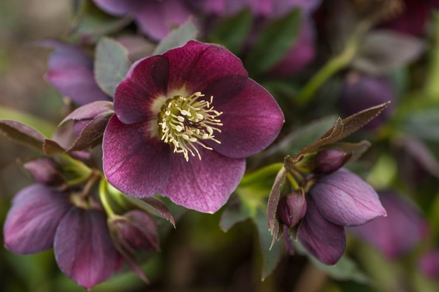
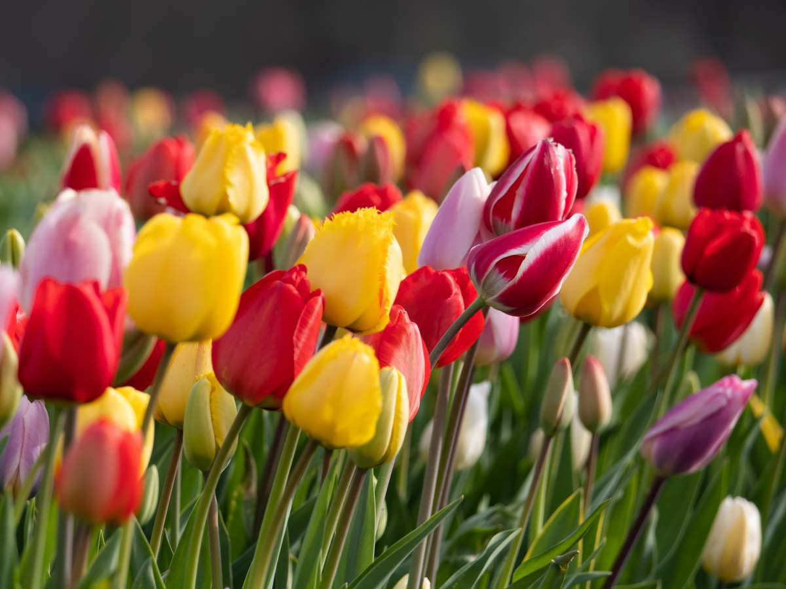
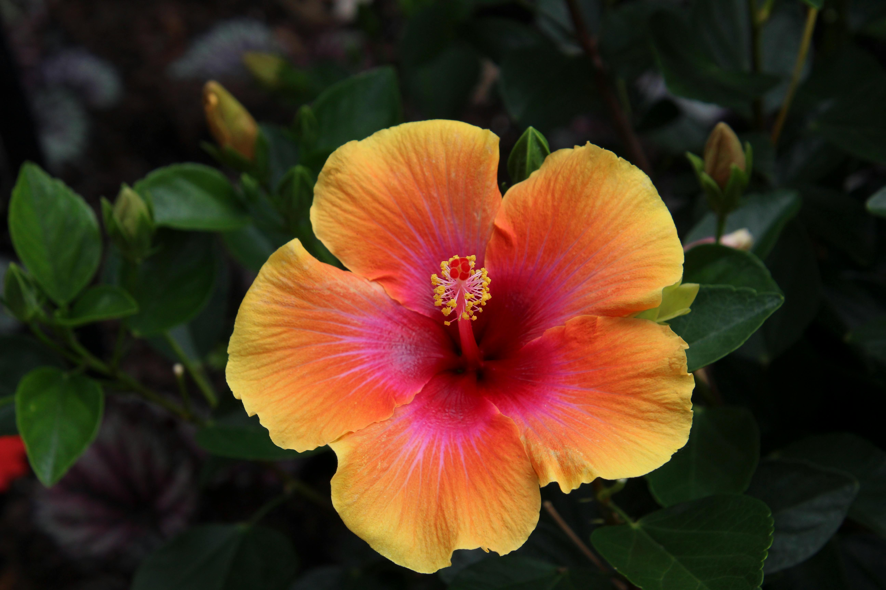
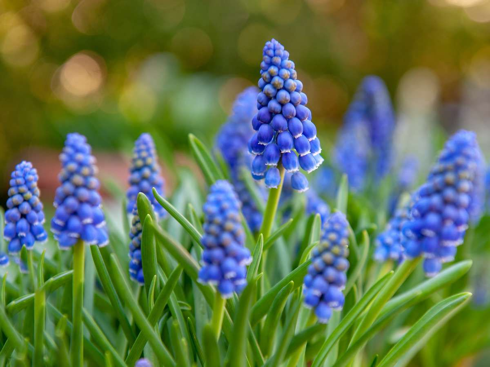
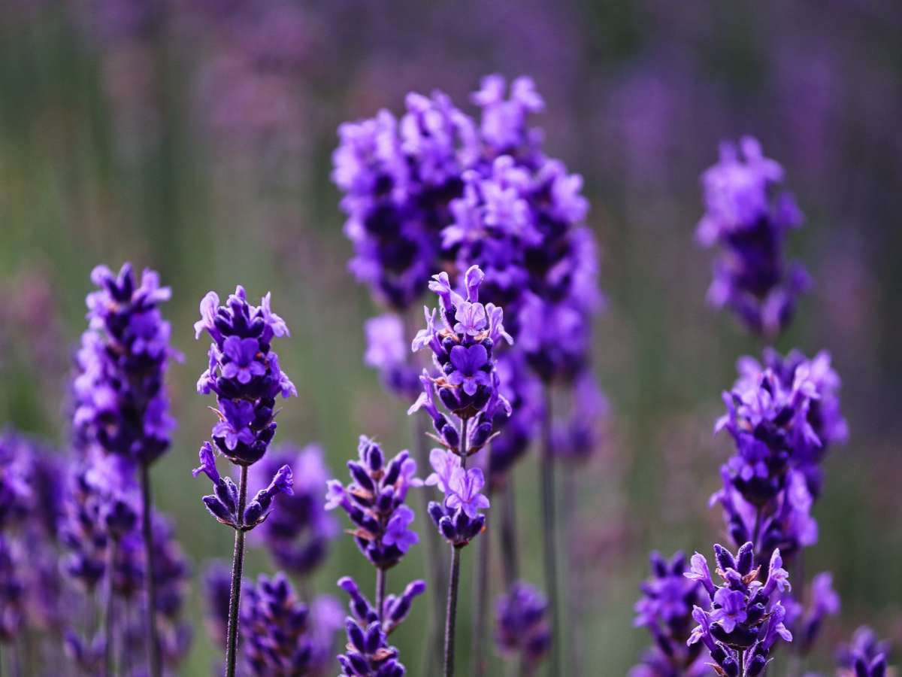

Impatiens Walleriana
Planta ornamental muy colorida y resistente, ideal para interiores o jardines
sombreados.
Ver más
Disponible en tonos rosados, rojos, blancos y naranjas.
Requiere riego frecuente y luz indirecta. Perfecta para macetas o canteros.
.jpg)
Echeveria Elegans
Planta resistente ideal para interiores y oficinas.
Ver más
Maceta decorativa incluida. Requiere poca agua y luz moderada.

Bonsái Japonés
Miniatura de árbol oriental cultivado con elegancia.
Ver más
Altura de 25 cm. Incluye guía de cuidado y poda.

Flor de Eléboro
Flor elegante de tonos suaves, muy apreciada por florecer en invierno cuando pocas
plantas lo hacen.
Ver más
Conocida como “rosa de Navidad”, destaca por su resistencia al frío.
Ideal para jardines sombreados o macetas exteriores.
Incluye guía de cuidado y recomendaciones de riego.

Buxus Sempervirens
Arbusto perenne de hojas pequeñas y brillantes, ideal para formar setos o decorar jardines.
Ver más
Conocido como “boj común”, se caracteriza por su crecimiento lento y su follaje compacto.
Tolera bien la poda y puede cultivarse tanto en macetas como directamente en tierra.
Incluye guía de cuidado y mantenimiento.

Tulipanes
Flores elegantes y coloridas que simbolizan amor, alegría y renovación.
Ver más
Disponibles en una amplia variedad de colores y tamaños.
Ideales para ramos, jardines o decoración interior.
Requieren buena iluminación y riego moderado.
Incluye guía de cuidado y floración.
.jpg)
Cotyledon Tomentosa
Suculenta única con hojas carnosas cubiertas de suave vello y bordes que recuerdan a una garra de oso.
Ver más
Ideal para interiores luminosos o balcones protegidos.
Requiere riego escaso y buena ventilación.
Crecimiento lento y muy decorativa por su aspecto original.
Incluye maceta decorativa y guía de cuidado.

Jasminum Officinale
Flor blanca de aroma dulce y delicado, símbolo de pureza y armonía natural.
Ver más
Conocido como “jazmín común”, es ideal para decorar jardines, terrazas o interiores luminosos.
Prefiere climas templados y requiere riego regular.
Puede cultivarse en macetas o enredarse en pérgolas y cercos.
Incluye guía de cuidado y recomendaciones de floración.

Flor de Hibisco
Flor tropical de gran tamaño y vivos colores, símbolo de belleza y energía natural.
Ver más
Ideal para exteriores soleados o interiores con buena iluminación.
Requiere riego moderado y clima cálido.
Incluye guía de cuidado y recomendaciones de floración.

Monstera Deliciosa
Planta tropical de hojas grandes y perforadas, ideal para dar un toque exótico y natural a cualquier
ambiente.
Ver más
Conocida como “Costilla de Adán”, es perfecta para interiores luminosos con luz indirecta.
Requiere riego moderado y buena humedad ambiental.
Puede alcanzar gran tamaño en condiciones favorables.
Incluye guía de cuidado y consejos de mantenimiento.

Muscari
Delicada flor de racimos azules o violetas, ideal para dar color y frescura a jardines y balcones.
Ver más
Conocida como “Nazareno” o “Jacinto de racimo”, florece en primavera y es muy resistente al frío.
Prefiere lugares soleados o con semisombra y riego moderado.
Perfecta para macetas, bordes o combinaciones con otras flores.
Incluye guía de cuidado y floración.

Ficus Benjamina
Árbol ornamental de hojas verdes brillantes, muy valorado por su elegancia y su fácil adaptación a
interiores.
Ver más
Conocido como “Ficus llorón”, puede cultivarse como árbol de interior o en jardines templados.
Prefiere luz indirecta y riego moderado, evitando el exceso de agua.
Purifica el aire y aporta un toque natural y sofisticado a cualquier espacio.
Incluye guía de cuidado y recomendaciones de poda.

Lavanda
Planta aromática de flores violetas y fragancia relajante, ideal para decorar y perfumar espacios
naturales.
Ver más
Conocida por sus propiedades calmantes y su uso en aromaterapia.
Prefiere lugares soleados y suelos bien drenados.
Requiere riego moderado y es resistente a la sequía.
Perfecta para jardines, macetas o arreglos decorativos.
Incluye guía de cuidado y cultivo.

Peperomia Obtusifolia
Planta de interior con hojas verdes y brillantes, ideal para espacios pequeños y de fácil cuidado.
Ver más
Conocida como “planta del bebé”, es perfecta para ambientes luminosos sin sol directo.
Requiere riego moderado y buena ventilación.
Es resistente y ayuda a purificar el aire.
Ideal para decorar escritorios, estanterías o salones.
Incluye guía de cuidado y mantenimiento.

Espatifilo
Planta elegante de hojas verdes intensas y flores blancas, ideal para interiores y ambientes con poca
luz.
Ver más
Conocida como “Lirio de la Paz”, ayuda a purificar el aire y aporta serenidad al ambiente.
Prefiere luz indirecta y riego regular sin encharcar.
Es perfecta para hogares u oficinas, aportando frescura y equilibrio natural.
Incluye guía de cuidado y recomendaciones de floración.